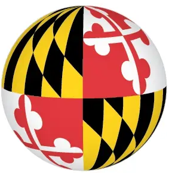
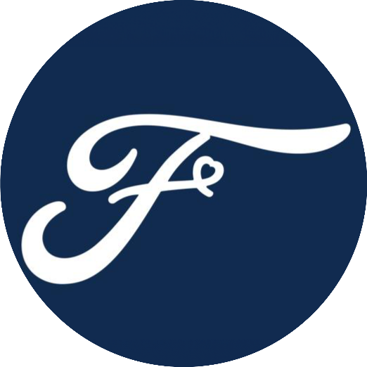
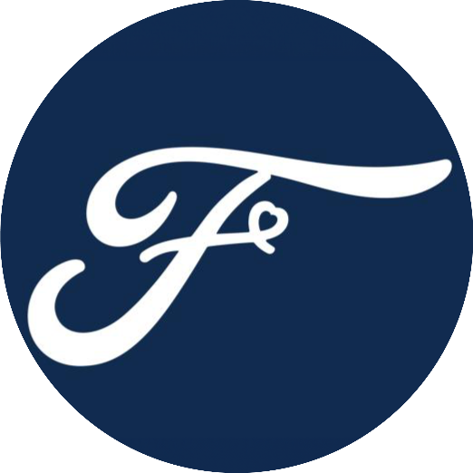

I am a PhD Candidate at Virginia Tech in the Electrical & Computer Engineering Department. I work on robotics, digital signal processing, machine learning, and acoustics advised by Dr. Rolf Müller. My current work focuses on exploiting machine learning techninques and robotics for use with acoustic bio-sonar and bat robots for novel sensing paradigms. I am also concurrently pursuing my Masters of Engineering Administration (MEA) in the Grado Department of Industrial and Systems Engineering at Virginia Tech.
I was awarded my Bachelors of Science from the A. James Clark School of Engineering at the  University of Maryland in Electrical Engineering where I was on the Dean's List and on Scholarship. I was also awarded my Masters of Science from Virginia Tech where I focused on applying machine learning as a novel sensing paradigm for dynamic bat ear (pinna) confirmations.
Since then, I've co-authored papers, published patents on my work, and presented at conferences – including winning the Best Presentation Award at the Acoustical Society of America Conference in Sydney, Australia in December 2023.
I am fortunate to have worked with amazing engineers and scientists at
 Bosch Research,

Ford Autonmous Vehicles,
Army Research Lab,
Bosch Research,

Ford Autonmous Vehicles,
Army Research Lab,
 Cessna, and
Bell Helicopter.
Cessna, and
Bell Helicopter.
In my free time, I like to ride my bike, fly my drone, fly fixed-wing aircraft, work on my car (2019 B9 Audi S5), and much more. You can keep up with some of my hobbies on my blog.
Investigating the Impact of Biomimetic Pinna Shape Variations on Clutter Echoes Received from Natural Environments
Ibrahim Eshera,
Rolf Müller
The Journal of the Acoustical Society of America. JASA, 2023.
PDF
Blog
Video
BibTeX
System and Method for Automatic Data Collection, Labeling, and Classification of Electric Vehicles from a Microphone Array
Ibrahim Eshera,
Charles Shelton,
Samarjit Das
United States Patent and Trademark Office. United States Patent Pending. 2023.
Blog
Video
A Novel System and Method for Measuring Fuel-Flow and Refueling Operation Status Using a Microphone Array and Machine Learning
Ibrahim Eshera,
Charles Shelton,
Samarjit Das
United States Patent and Trademark Office. United States Patent Pending. 2023.
Blog
Video
Autonomy, Soft-Robotics, Deep Learning, and Bat Biosonar.
Rolf Müller,
Sounak Chakrabarti,
Ibrahim M Eshera,
The Journal of the Acoustical Society of America. JASA, 2021.
PDF
Blog
Video
BibTeX
Development of a Tension-Controlled Soft-Robotic Actuation System for a Biomimetic Bat Robot
Sanmeel Vijay Lagad,
Ibrahim M Eshera,
Sounak Chakrabarti,
Rolf Müller
The Journal of the Acoustical Society of America. JASA, 2021.
PDF
Blog
Video
BibTeX
Characterization of 4.5 kV charge-balanced SiC MOSFETs
Jack Knoll,
Ibrahim Eshera,
Christina DiMarino,
Reza Ghandi
2021 IEEE Applied Power Electronics Conference and Exposition (APEC). IEEE, 2021.
PDF
Blog
BibTeX
Present –Dec. 2025Ph.D. in Electrical Engineering
Dec. 2019
Virginia Polytechnic Institute and State University • Blacksburg, VA
Advisor:
Rolf Müller
Thesis:
Committee:
Rolf Müller,
Alexander Leonessa,
Thinh Doan,
Jin-Ping Han,
Paul Bogdan
Thesis
Thesis Recording (Proposal)
Thesis Slides
Dec. 2022 –May 2017M.S. in Electrical Engineering
Dec. 2019
Virginia Polytechnic Institute and State University • Blacksburg, VA
Advisor:
Rolf Müller
Thesis: Towards Deep Evolutionary Reinforcement Learning for Echo-Based Navigation in Complex Natural Environments
Committee:
Rolf Müller,
Alexander Leonessa,
Thinh Doan
GPA: 3.75/4.00
Thesis
May 2019 –Aug. 2014B.S. in Electrical Engineering
Aug. 2014 University of Maryland • College Park, MD
University of Maryland • College Park, MD
GPA: 3.65/4.00
Thesis
Thesis Recording
Sep. 2023 –Sep. 2021 Bosch Research • Pittsburgh, PA (Remote)
Bosch Research • Pittsburgh, PA (Remote)
April 2023Machine Learning Research Intern, Bosch Center for Artifical Intelligence (BCAI)
Worked with Vision-Language Foundation Models with limited dataset in an effort to deploy a scalable and robust solution for object detection for an autonomous valet parking system.
April 2023 –May 2022 Bosch Research • Pittsburgh, PA
Bosch Research • Pittsburgh, PA
May 2022Machine Learning Engineer Intern, AudioAI & AIoT Group
Developed end-to-end hardware and software systems to generate high-quality labeled audio and visual data for various downstream tasks, allowing highly niche datasets to be created for data-driven approaches to machine learning problems (patents pending).
May 2020 –May 2019 Virginia Tech • Blacksburg, VA
May 2019Graduate Research Assistant, Center for Power Electronic Systems (CPES)
Characterized and published results for 4.5 kV SiC Charge Balanced MOSFETs at room temperature both statically and dynamically, in collobration with General Electric (GE).
Aug. 2018 –May 2018 Ford Motor Company • Detroit, MI
Ford Motor Company • Detroit, MI
May 2018Driver Assist Technologies (DAT) Engineering Intern, Research & Advanced Engineering Group
Developed tools for autonomous vehicle and Driver Assist Technologies (DAT). Integrated DAT features from LiDAR and radar sensors, such as Lane Detection, Path Planning, and Pedestrian Detection into real-time overlay of onboard camera feed.
Aug. 2017 –May 2017 Textron Aviation (Cessna) • Wichita, KS
May 2017Engineering Intern, Avionics & Electrical Systems
Developed and prototyped end-to-end embedded system for the Cessna Citation Longitude that detects and warns ground handlers and pilots of obstructions and dangers for autonomous tugging and taxi operations on the ground.
Aug. 2016 –May 2016 Bell Helicopter • Dallas, TX
May 2016Engineering Intern, Flight Technology Research & Development
Updated physics simulation software written for an essential component of modeling the V-22 Osprey flying dynamics.
Aug. 2015 –May 2015 United States Army Research Lab • Adelphi, MD
May 2015Engineering Intern, Sensors & Electronics Division Directorate
Researched linearity characteristics of millimeter-wave GaN power amplifiers in order to maximize output efficiency.
2024Best Presentation Award
40th Annual Virginia Tech Research Symposium and Exposition · Blacksburg, Virginia
2023Best Conference Presentation Award
185th Meeting of the Acoustical Society of America · Sydney, Australia
2018Benjamin A. Gilman International Scholar
Awarded by the U.S. Department of State for exceptional study abroad program.
2014 – 2019Department of Electrical & Computer Engineering Scholarship
Awarded by the Unviersity of Maryland, A. James Clark School of Engineering for merit-based students.
2014 – PresentCessna Training Academy, FAA Private Pilot Certificate